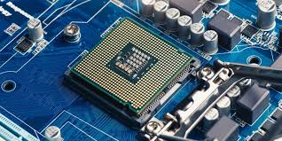
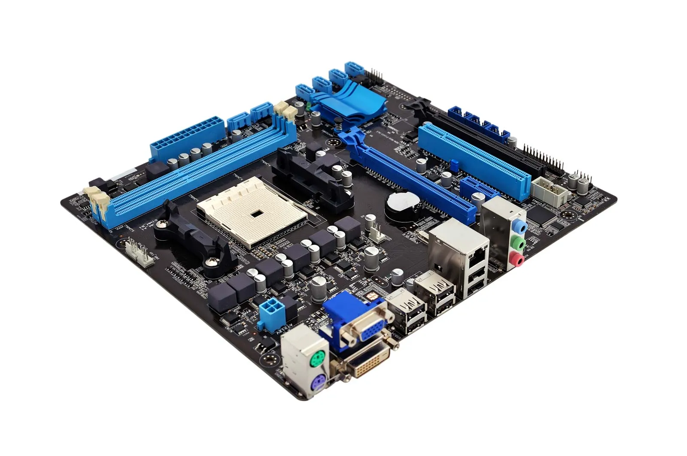
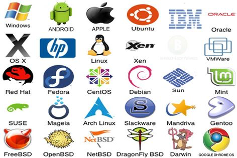
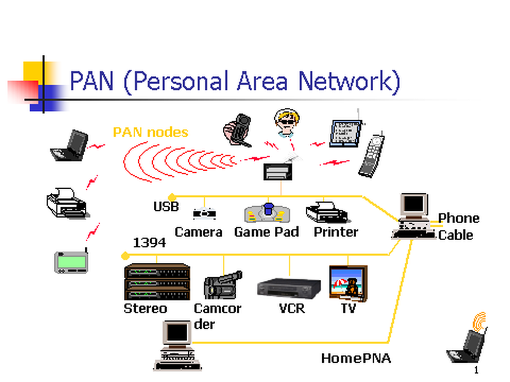
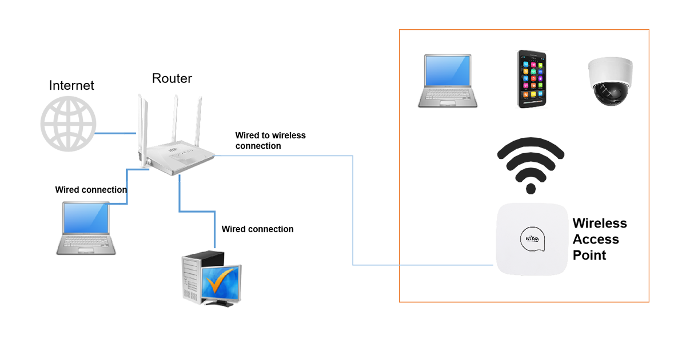
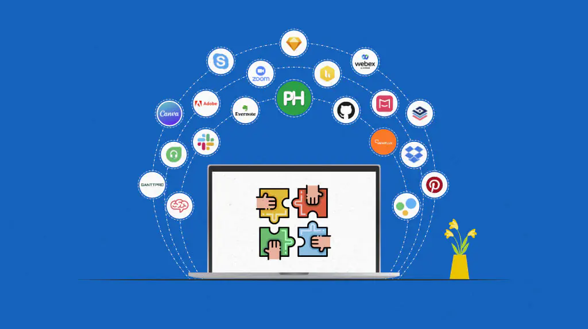

← Historical Perspective on Computing
Introduction to IT Basics
Information Technology (IT) is an essential aspect of modern life, influencing how we communicate, work, and entertain ourselves. Understanding the basics of IT involves exploring its core components—hardware, software, networking, and the role of IT in modern organizations. This section will provide an overview of these fundamental concepts to offer a foundational understanding of the IT landscape
A. Hardware
Hardware refers to the physical components of a computer system. These components are tangible and interact with software to perform various tasks.
Central Processing Unit (CPU)

Often referred to as the "brain" of the computer, the CPU executes instructions from software to perform basic arithmetic, logic, control, and input/output (I/O) operations.
The CPU consists of the Arithmetic Logic Unit (ALU), which handles mathematical and logical operations, and the Control Unit (CU), which directs the operation of the processor.
CPUs vary in speed and efficiency, with multicore processors offering parallel processing capabilities that enhance performance, especially for complex computing tasks.
Memory and Storage
- Random Access Memory (RAM)
RAM is volatile memory that temporarily stores data and programs that are currently in use, allowing the CPU to access them quickly. More RAM can improve system performance by reducing the need to access slower storage solutions.
Storage Devices
- Hard Disk Drives (HDDs) Use spinning disks to read and write data. While traditionally less expensive and offering more storage space, HDDs are slower and more prone to mechanical failure.

- Solid-State Drives (SSDs) Use flash memory to store data, providing faster access times, reduced power consumption, and increased durability. SSDs have become the preferred storage solution in most modern computers.
Use flash memory to store data, providing faster access times, reduced power consumption, and increased durability. SSDs have become the preferred storage solution in most modern computers.
- Optical Drives

Used for reading and writing data to CDs, DVDs, and Blu-ray discs. While less common today due to the rise of digital downloads and cloud storage, they are still used for media playback and data backup in some scenarios.
Input and Output Devices (I/O):

Input Devices: Hardware that allows users to interact with the computer, including keyboards, mice, scanners, and webcams.
Output Devices: Hardware that presents information to the user, such as monitors, printerInput Devices, and speakers.
Motherboard

The main circuit board that houses the CPU, memory, and other essential components. It facilitates communication between all parts of the computer.
Includes slots for RAM, storage devices, and expansion cards (such as graphics cards and sound cards), as well as connectors for peripherals and power supply.
Power Supply Unit (PSU)

Converts electrical power from an outlet into a usable form for the computer’s components. The PSU is critical for ensuring that all parts receive the correct voltage and power to function properly.
B. Software
Software refers to the instructions and data that tell the hardware what to do. It is categorized into system software, application software, and development software.
System Software
- Operating Systems (O.S)

The OS is the primary software that manages computer hardware and software resources, providing a user interface and acting as a platform for application software.
Common operating systems include Microsoft Windows, macOS, Linux, and mobile operating systems like Android and iOS.
The OS handles tasks such as memory management, process scheduling, file management, and device control, ensuring smooth operation and user interaction.
- Utilities
Utility software helps manage, maintain, and control computer resources. These programs perform specific tasks to support or enhance the operating system's functionality.
Antivirus software, disk cleanup tools, file compression utilities, and backup software
Application Software:
Application software consists of programs designed to perform specific tasks for users, such as word processing, web browsing, or gaming.
- Productivity Software: Includes applications like Microsoft Office (Word, Excel, PowerPoint) and Google Workspace (Docs, Sheets, Slides) that are used for creating documents, spreadsheets, and presentations.
- Web Browsers: Software used to access and interact with websites, including Google Chrome, Mozilla Firefox, Safari, and Microsoft Edge.
- Media Players: Applications for playing audio and video files, such as VLC Media Player, iTunes, and Windows Media Player.
- Graphics and Design Software: Tools like Adobe Photoshop, Illustrator, and AutoCAD are used for digital art, graphic design, and computer-aided design (CAD).
Development Software
Development software includes tools and programs used by developers to create other software applications
Integrated Development Environments (IDEs) like Visual Studio, Eclipse, and PyCharm provide comprehensive facilities for software development, including code editing, debugging, and testing.
C. Networking
Networking involves connecting multiple computers and devices to share resources and information, facilitating communication across local and global distances.
- Types of Networks:
- Local Area Network (LAN) A network that connects devices within a limited area, such as a home, office, or building. LANs typically use Ethernet cables or Wi-Fi to connect devices.
- Wide Area Network (WAN) A network that covers a broad geographic area, often composed of multiple LANs connected through routers and telecommunications links. The Internet is the largest and most well-known WAN
- Personal Area Network (PAN) A small network used for connecting devices within a personal workspace, such as smartphones, laptops, and wearable devices using technologies like Bluetooth or Wi-Fi.

- Metropolitan Area Network (MAN) A network that spans a city or campus, larger than a LAN but smaller than a WAN. MANs are often used by organizations with multiple buildings within a city.
- Networking Hardware:
- Routers: Devices that forward data packets between computer networks, directing traffic and ensuring data reaches its destination. Routers are essential for connecting multiple networks, such as a home network to the internet
- Switches: Devices that connect devices within a single network, forwarding data only to the specific device for which it is intended, improving network efficiency and security.
- Modems: Devices that modulate and demodulate analog signals for digital data transmission over phone lines, cable systems, or fiber-optic cables, providing internet connectivity to home and office networks.

- Access Points (APs): Devices that allow wireless devices to connect to a wired network using Wi-Fi or other standards. They extend the range of a wireless network and support multiple devices.

- Network Protocols:
- Transmission Control Protocol/Internet Protocol (TCP/IP): The foundational protocols for the internet, defining how data is packetized, addressed, transmitted, routed, and received.
- Hypertext Transfer Protocol (HTTP/HTTPS): Protocols used for transferring web pages over the internet. HTTPS is the secure version of HTTP, encrypting data for safer communication.

- File Transfer Protocol (FTP): A standard network protocol for transferring files between a client and a server on a network. FTP allows users to upload, download, and manage files on a remote server.

D. Role of IT in Modern Organizations
IT plays a crucial role in modern organizations, enabling them to operate efficiently, innovate, and compete in a digital economy.
- Information Management:
- Databases: Organizations use databases to store, retrieve, and manage data efficiently. Relational databases, like MySQL and PostgreSQL, and NoSQL databases, like MongoDB and Cassandra, support different data types and use cases.

- Data Warehousing and Big Data: Data warehousing involves aggregating and storing large amounts of data from various sources for analysis and reporting. Big data technologies, such as Hadoop and Spark, allow organizations to process and analyze vast datasets to uncover trends and insights
- Communication and Collaboration:
- Email and Instant Messaging: Essential tools for internal and external communication, facilitating rapid information exchange.
- team collaboration, file sharing, video conferencing, and project management, supporting remote work and distributed teams.

- Social Media: Platforms like LinkedIn, Twitter, and Facebook are used for marketing, customer engagement, and brand building.

- Business Applications:
- Enterprise Resource Planning (ERP): Integrated software solutions that manage a company’s core business processes, such as finance, human resources, supply chain, and manufacturing. Examples include SAP, Oracle ERP, and Microsoft Dynamics.
- Customer Relationship Management (CRM): Software that helps organizations manage interactions with customers and prospects, improving sales, marketing, and customer service. Popular CRM platforms include Salesforce, HubSpot, and Zoho CRM.

- Supply Chain Management (SCM): Software that oversees the flow of goods, information, and finances from supplier to customer, optimizing inventory, procurement, and logistics.
- Security and Compliance:
- Cybersecurity: Protecting computer systems and networks from theft, damage, or unauthorized access. Security measures include firewalls, antivirus software, encryption, and multi-factor authentication.
- Data Privacy and Compliance: Organizations must adhere to data protection regulations, such as the General Data Protection Regulation (GDPR) in the EU and the California Consumer Privacy Act (CCPA) in the U.S., ensuring the safe handling of personal and sensitive information.
- Emerging Technologies:
- Cloud Computing: Delivers computing services—such as servers, storage, databases, networking, software, and analytics—over the internet, offering scalability, flexibility, and cost savings. Major cloud providers include Amazon Web Services (AWS), Microsoft Azure, and Google Cloud.

- Artificial Intelligence (AI) and Machine Learning (ML): Technologies that enable computers to perform tasks that typically require human intelligence, such as recognizing speech, making decisions, and predicting outcomes. AI and ML are used in applications ranging from virtual assistants to predictive analytics and autonomous vehicles.
- Internet of Things (IoT): The network of physical devices—such as sensors, vehicles, appliances, and wearables—connected to the internet, collecting and sharing data. IoT enables smart cities, industrial automation, and improved healthcare monitoring.